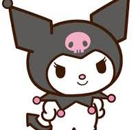

Here I will list and describe the most popular Sanrio characters, check them out for detailed information about their personalities, friendships and pictures of their appearances! <3
Hello Kitty
Full Name: Kitty White
Birthday: November 1
Gender: Female
Species: Cat
Hobbies: Baking cookies, collecting cute things
Friends: My Melody (best friend), Cathy, Chip, etc.
Enemies: Catnip, Grinder, Fangora, Frido
Created by: Yuko Shimizu
My Melody
Full Name: My Melody
Birthday: January 18
Gender: Female
Species: Rabbit
Hobbies: Baking almond cakes
Friends: Hello Kitty (best friend), Chip, My Sweet Piano
Enemies: Catnip, Grinder, Fangora
Created by: Yasuko Matsumoto
Kuromi
Full Name: Kuromi
Birthday: October 31
Gender: Female
Species: Rabbit
Hobbies: Writing in her diary, cooking, reading
Friends: Konmi, Chumi, Nyanmi
Enemies: My Melody
Created by: Junko Takeuchi

Cinnamoroll
Full Name: Cinnamon
Birthday: March 6
Gender: Male
Species: Dog
Hobbies: Eating
Friends: : Cappuccino, Espresso, Azuki, Coco
Enemies: -
Created by: Miyuki Okumura
Pompompurin
Full Name: Pomupomupurin
Birthday: April 16
Gender: Male
Species: Dog
Hobbies: Collecting and hiding shoes, hanging out with friends
Friends: Muffin, Whip, Vanilla
Enemies: -
Created by: Miyuki Okumura
More things Sanrio!
The Sanrio characters have made many appearances in popular culture, games and shows since their creation. If you want to see more of them and get to know the characters on a deeper level, check out the following TV Series. I have listed the most popular ones for you. <3
List of Hello Kitty SeriesTable description:
In this table you will find a list of Hello Kitty themed series, with the series name, active years and number of episodes detailed.